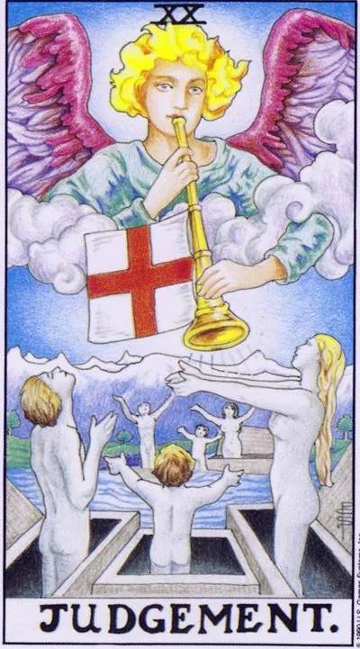

Major Arcana · XX
XXJudgement
The trumpet of the archangel calls to rise: a time of honest reassessment of life and second birth.
Archetype and core meaning
On the card, the sleepers rise from their graves after hearing the trumpet of the archangel. It's not a sentence, it's an invitation: life asks for an account -- not before the judge, but before the present. What is the next thing we've lived, and what remains in the ground?
In the case of Judgment, it means waking up after a long sleep: suddenly it becomes clear who you were supposed to be. The call comes through chance, a book, illness, conversation - but it is instantly known: it is mine.
Arcana is also forgiveness: old guilt that you've been dragging around like a sack for years is absolved -- not an excuse, but a let-down. You can't have a rebirth with the burden of the former. Pluto's nature makes the process profound and irreversible.
Daily life
Call day from the past: a message from an old friend, a message that changes plans, an offer that beats your heart. Answer it's not an accident, it's a schedule. It's good to close the eternal family matters: call your parents, end an old quarrel. The case started today promises to update more than planned.
Work and career
The call for change of the professional scale: the experience suddenly adds up to a new role — promotion, business, vocation. Past mistakes are no longer a stigma: partners and employers are willing to give a second chance. Don't reject the call out of convenience — the rejected comes back louder. It's good to go back to the old project on new terms.
Relationships
Relationships are judged by conscience: who was right is no longer important; whether they are both ready to start over by other people matters: the past is for real, not "okay, forget"; the return of a significant person is possible - not a repeat of the old circle, but a new chapter with it. The lonely card promises to awaken a feeling that was believed to be buried.
Health
Recovery after a long streak: the body hears the command "up" - the strength returns, the chronicle recedes. A good period for decisive steps: surgery that was postponed, a course that changes the quality of life. The emotional part is also important: let go of resentment relieves half of the symptoms. The body now speaks the truth directly - listen the first time.
Spiritual meaning
The court is the lap of the grand call: every tradition has a trumpet that wakes the sleepers; in practice, it opens up work with purpose and tribal memory, helps you hear your real name; meditation on sound — the bell, the gong, the voice — brings you to the depths.
The trumpet sounds and you pretend to be asleep: the call is postponed, self-criticism replaces action.
Archetype and core meaning
The upside down Court is a man who pretends not to hear, and the call has been long and persistent: change jobs, end relationships, start treatment, go, and he finds a hundred good reasons to stay.
The other face of the arcana is the judge turning inward: a perpetual trial of himself without the right to appeal. These people are not wrong, they are "just terrible," and this formula is more reliable than any jailer.
And the opposite happens: the sentence is passed on to others and not appealable, a resentment that has become a worldview, and until the case is reopened, no new housing can be built in the old prison.
Daily life
Deferred Decision Day: Unanswered letters, later calls, a question that needs to be resolved yesterday, notice where you pretend you haven't heard, and one call made today will take off the load of a whole week.
Work and career
Self-defeating stagnation: it's time to change a role or a place, but it's not the time. You may have recently given up an opportunity out of fear of scale, see if it's back in another way. Self-exploration after failure eats up more energy than failure itself.
Relationships
The relationship is on hold because of the unsentenced sentence: someone continues to punish a partner for a long history — or is guilty as a cross himself. Forgiveness was offered; you did not accept it. Fear of intimacy after a painful experience is possible: the past judges the present. One honest decision allows you to move forward is to forgive or let go.
Health
Health suffers from long-term decisions: the exam is delayed for the third month, the course is thrown in the middle, "it will pass" has become the main diagnosis. Self-flagellation adds its own: immunity is the first to lose ground. Set yourself a day of decisive action for health - and spend it. A patient body is waiting for your "yes", but keeps counting.
Spiritual meaning
Mystically upside down, the Court is deaf to the call of the soul: the practice is formal, the destination is stomping, the gifts lie unpacked, the birth program of condemnation will be passed on until someone breaks the chain, start with a small ritual of forgiveness - yourself, your parents, the abuser. Until the sentences are burned, the trumpet will sound again: it does not get tired.
🌿 In brief
The main idea
The court is, above all, liberation. Not punishment or condemnation, but a way out of the tight confines in which a person was previously.
How it manifests
Relieving yourself from an old role, dismissal, vacation, divorce, debt repayment, admitting mistakes, giving up limiting habits.
Work and money
Closing a loan, receiving money from a deposit, releasing from obligations, dismissal or changing activities.
In a relationship
Very often, the card shows divorce as liberation, and it can also be a way out of a role that one has long played for others.
The shadow side
A man wanted to keep his job, but he got fired, wanted to keep his marriage, and he was free.
Feature of the school
The court is about Pisces and the XII House, and its most important theme is to break the boundaries, to redeem and to return to one's own nature.
📜 In detail — lecture extracts
Essence of the card
The common name “the terrible judgment” gives only a flat meaning (“some condemnation of oneself from the outside or from one’s own personal side”) – the essence is deeper: it is the liberation from the tight tight boxes (square coffins of material existence) into spiritual life. From the darkness, from the chthonic base, people rise in response to the call (the trumpet voice of an angel), experiencing “astonishment, admiration and admiration” – as Waite puts it. The main sense of the card is “going out of these clamped sensations into something more free, more filled with material air” (the card is associated with eternal life).
Upright position
- He does not give a separate structure "sphere by sphere", but lists four themes of the equations:
- Communication/society
- Internal freedom: to free yourself from the framework and boldly tell a person what you think; but it is not always useful to leave social agreements — the truth will add difficulties in communicating with ordinary people who are trapped in this very framework.
- Informal communication: instead of “Hello Ivan Ivanovich / respected professor” – a lively personal contact with the essence of a person, not with his role.
- Innovation, freeing yourself from delusions: “walking around the square of your usual actions and suddenly finding a new way,” more freedom and opportunity; rejecting norms for the sake of sincerity helps cooperation.
- Work/finance/work/finance/
- - Vacation or dismissal as a way out of the tight confines of work in the space of rest. Good - only for those who are tired; workaholic freedom is anguish. dismissal by force (reduced) - is already a negative.
- - Open information, insider information; money with interest, withdrawal of money, withdrawal of deposit early, withdrawal from the stash.
- - Final payment of the mortgage / loan - release from obligations ("jump off the trident"); removal of restrictions and conditions (inheritance upon reaching the age of 18).
- Atonement and repentance: “the sword does not cross the guilty head” – confessed, forgiven himself – released.
- Self-development
- - Out of the comfort zone: habits work on the machine (driving on mechanics), save consciousness, but sometimes you need to get out with new conscious actions; admitting your mistakes.
- Insight, illumination: knowledge comes from somewhere above - "hear the voice of God, the trumpet of the Archangel" and suddenly realize; awareness = liberation from the errors in which they were "as in this narrow tomb."
- In the extreme sense, death is the long-awaited liberation of the soul from the square frame of the body.
- Personal life
- Most often, his card fell out on divorce: partners are burdened with life together. Direct - divorce that frees ("woman feels free").
- Awareness of mistakes and forgiveness of oneself; coming out as a long-awaited exit from the true self "from the false case where you played a role."
- Diseases and tendencies inherited through genes are mentioned only in the subject of connection with the genus.
Negative meaning
- It does not have a separate block; the values are scattered in the text:
- Judgment in the negative does not mean enslavement, it means liberation that you do not need: dismissal when you wanted to stay; freedom that you do not know what to do.
- Same divorce, but you feel abandoned, thrown out of marriage; the school joke is, "a free woman and an abandoned woman are the same woman, but with different moods."
- - The opposite is coming out: the truth was brought out against will, the truth that could harm was revealed.
- For a workaholic, liberation is terror and torment.
- Approximate to the questions of death is the premature release of the physical body from the soul.
- Pregnancy → childbirth is possible if the mother is heavy and wants to be released – but “dive too deep into this cough – sometimes it is very difficult to emerge.”
School emphases and distinctive points
- - Astrology: 12th house, Pisces, the abode of Jupiter and Neptune; "it is impossible to place these cards on another basis", agrees with the system of Yuri Khan. Jester and Mir are just above houses (alpha and omega turns of the spiral). 12th house: isolation (monastery, ashram, prison, long-distance voyage, expedition, hospital, mental hospital), secret knowledge, esoteric, karma. Jupiter is a bright god, Neptune is a dark chthonic: passions fight against good intentions.
- Angel: Israphilos (a trumpeted voice before the end of the world, taking souls); consonant with Azrael and Raphael, the archangel-healer, guide to the spiritual world, patron of sailors (pictured with a fish); parallel with Hermes Trismegistus; Raphael brought Solomon a ring with a six-pointed star "to subdue demons" - to fight his inner demons.
- Magendavid: two different triangles - the struggle of light and dark, macrocosm and microcosm; Shiva and Kali in Hinduism; the middle path of the Buddha between the extremes of the spiritual and material.
- - Chthonic beings: Poseidon (originally underground), Hades, Demeter, Persephone (grain: born - dies), Hecate, hecatoneheir (essences), Tiamat (ocean of chaos, dragon of seven heads), Marduk - the god of order, judge of the gods, the artisan of healing (= Jupiter), who created the sky and the earth from the body of Tiamat; double trident as a hint at Neptune; fishing hook = habits and addictions, which can not jump downwards. - Höngri Krgnato, today - natural deities.
- Slavic: Baba Yaga as a force of nature and dead ancestors - if you communicate politely, give a glomerulus, a gray wolf or a well-mannered horse; the connection with the family - genes, body, instilled habits.
- - Square vs triangle: the material world was painted with a square (square coffins), the spiritual - with a triangle with the eye of God; Christ rises from a square coffin with a white flag - but Jesus on the Tarot cards was impossible to draw, so allegorical Masonic symbolism.
- - Red Cross on a white background: not a medical cross, but the flag of England - St. George/Yuri/George (one name): a great martyr who was tortured and executed many times, and by the end of the day he was healed; the Christian version of Tammuz/Dumuzi - a dying and resurrecting god like Adonis and Osiris ("Osiris is green - because it grows like grass"). Yuriev Day (November 26): the transition of peasants, "Here's your grandmother and yuryev day" - liberation from the pressing one.
- - Film/literature: Avatar (transition of the soul from a stunted body to a strong present); Pandora's chthonna saves), The Matrix (Keanu Reeves' three exits from the capsule/frame/merge with the world), Nolan's "Inception" (conditionally), Aronofsky's "Fountain" ("Death") It is the road to awe.” Favorite Director, “The Shawshank Escape” The key to the card in the word redemption: Redemption, redemption, redemption, redemption, redemption; The rain washes away the past and sins, the “Island” of Lungin (three ways to God). Mamonov died on the day of the recording of the lecture - "released." Recipe: tarot Pictures from our lives, like shots from a movie.
- - Admission: logic is only used to frame feelings with words; intuition and emotions are primary. Example of a student: The judgment of "what will teach me tarot" - an entry into a new level of spiritual development.
- - Banzhaf is not quoting.
Keywords
- Liberation · inner freedom · going out of tight confines into space · redemption, repentance · chthon (natural base, habits) · resurrection · trumpet voice, call · insight, insight, awareness · sincerity, informality · divorce-liberation / abandonment
- ---